<<2016年11月 | トップページ | 2017年1月>>
2016年12月
ゆく年くる年［黒川桃花］
こんにちは。黒川桃花です。
2016年終わっちゃいますね。
あっという間でした。
時間が過ぎていくのがとってもはやいなぁ。
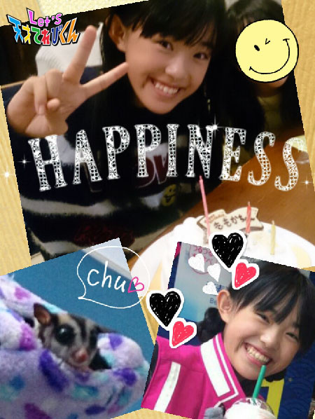
今回のお題は「 ゆく年くる年 」
私、今年は年女だったんです。
今年はたくさん、楽しいこと、うれしいことがありました！
☆ てれび戦士になれたこと
☆ ミッションでいろんなところに行ったこと
☆ うちに新しい家族（ モモンガのココアちゃん ）が来たこと
☆ 1500ピースのジグソーパズルを完成させたこと
☆ テストでいっぱい100点をとれたこと
☆ ママの身長を越したこと
などなど。
書ききれないくらいいろいろありますが、
やっぱりてれび戦士になれたことが
一番うれしかったことです！！
2017年も良い年になるといいな～ (^.^)
投稿者:黒川桃花 | 投稿時間:18時45分 | カテゴリ：てれび戦士 | 固定リンク
ゆく年くる年［瀧澤翼］
こんにちは！
テストが終わって、テンションが高い瀧澤翼です＼(^o^)／
さぁ、今回のテーマは「 ゆく年くる年 」かぁ。。。
今年もあちこちの都道府県に行って
いろいろなミッションをたくさんしました。
ほかにも家族とジンギスカンを食べに行ったり
海へ行ったり、栃木県日光のテーマパークにも行きました。
そんな充実した2016年が終わり、2017年がやってきます！
さらば、2016年！！
そして2017年、僕は中学３年生になります。
受験勉強や演技・ダンスetc を
今まで以上に本気で取り組み、
結果を出せる１年を過ごしていこうと思います。
と、いうわけで2017年は『 本気の１年 』にします！
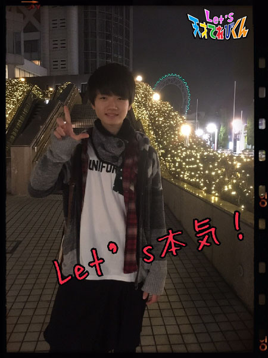
それでは・・・
Let's 良いお年を～！
投稿者:瀧澤翼 | 投稿時間:18時54分 | カテゴリ：てれび戦士 | 固定リンク
ゆく年くる年［胡内奏芽］
こんにちは！
胡内です。
先日、家族で忍者の格好をしてきました！
三重県に行って三重どちゃもん・にんまるに会ってから、
忍者に興味がでてきました。
ってことで、まずは格好からー！！笑っ
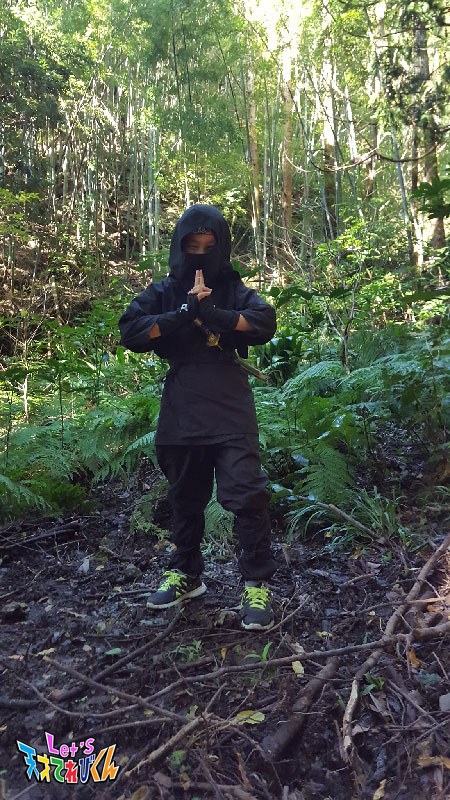
どんぐりと栗、発見！！！
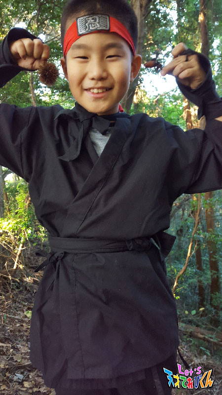
忍者の格好するだけで、気分がウキウキ (*^^*)
すごい楽しかったです！！
さて、今回のテーマは
「 ゆく年くる年 」です。
ぼくは、地球を守るためにいろいろミッションをしてきましたが、
すぐあせってしまうんです。
それで失敗することも（ 泣 )
だから、来年の目標は「 冷静になる 」ことです。
なにごとも冷静に！！！
がんばります。
あとは、夏にやりたかったサーフィンもできなかったので、
来年はやりたいです。
できるかなー？
１日１日を大切に、来年も過ごしていきたいです。
それでは！！！レーッツ！
投稿者:胡内奏芽 | 投稿時間:18時45分 | カテゴリ：てれび戦士 | 固定リンク
ゆく年くる年［林武尊］
こんにちは、林武尊です。
この前、帰り道で、みのりと一緒に “ 歌詞乗っ取りゲーム ” をしました！
結構難しい(￣▽￣;)
「 世界に一つだけの花 」→「 チューリップ 」
→「 世界に一つだけの花 」→「 チューリップ 」のくり返しで
一向に進みませんでした (´▽`)
ほかにも “ ドレミの歌ゲーム ” とかをして楽しい時間を過ごしました( ˙︶˙ )
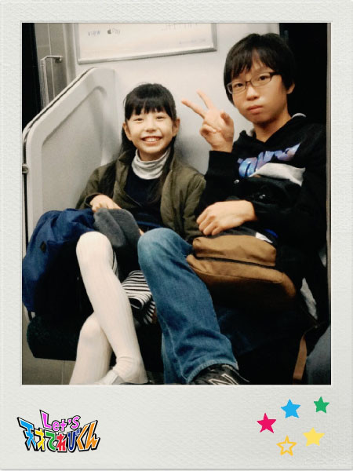
今回のお題は【 ゆく年くる年 】です。
もうすごく寒いですね～
みかんがおいしい季節です (*´～｀*)ŧ‹"ŧ‹"ŧ‹"
まずは、来年の抱負を発表したいと思います｡
来年は冒険的な１年にしたいです (￣^￣)ゞ
今の友達と、電車や自転車でいろんなところにでかけて遊びたいです。
お腹がすいたらご飯を食べて、欲しいものがあったら途中で買って、
いろんなことを話してみたいです！
夏休みは、行ったことのない都道府県に行きたいです。
京都とかがいいなー
八つ橋食べてお寺めぐりをして、
いっぱい遊んで、いっぱい観光して帰りたいです。
今年の年末は、おばあちゃんの家で、
いつも見ているテレビを見て過ごしたいと思います。
久しぶりにいとこも帰ってくるので楽しみ o(*ﾟ▽ﾟ*)o
でも勉強もしなきゃ (´-﹏-`；)
今年みたいに来年もがんばります！！ (ง •̀_•́)ง
では良いお年を～
投稿者:林武尊 | 投稿時間:18時45分 | カテゴリ：てれび戦士 | 固定リンク
ゆく年くる年［辻晴仁］
こんにちは、つじはるとです！
このあいだダリという
スペインの画家さんの美じゅつてんに
行ってきました。
なんともふしぎ～～な絵がたくさんあって、
とってもおもしろかったです (?_?)
ぼくが一番心にのこった絵は、
「 ラファエロの聖母の最高速度 」という作品です。
美じゅつ館の外に出たら、
紅葉した木から葉っぱがたくさんちっていて、
空気が冷たくて、
冬が来るぞ～というふんい気で
いっぱいでした♪
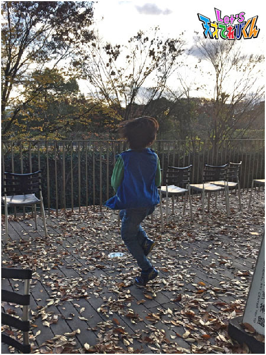
冬大好きなぼくは、うれしくなって、
思わずおどってしまった～!(*^^*)!
いよいよ2016年も終わりですね。
今回のテーマは、「 ゆく年くる年 」。
ぼくは、毎年、大みそかは、
おじいちゃんの家のほりごたつに入って、
家族みんなで、紅白歌合戦を見ながら
ゆった～りのんび～りすごします。
午前０時が近づいたころに、
おじいちゃんが作ってくれる年こしそばを
食べるのが楽しみ。
今年は、てれび戦士になって、
たくさんの新しい経験をしました。
大変なこともあったけど、
知らなかったことをいっぱい知ることができたし、
いっしょうけんめいやれてよかったな。
てれび戦士のなかまやたくさんの人たちと
出会えてほんとうによかったな。
そんな１年にありがとうって思いながら
今年ものんびりしずかな年こしを
すごしたいです。
そして、香川で大好きになったうどん。
新年には、おもち入りの年明けうどんを
食べようと思ってま～す (#^^#)
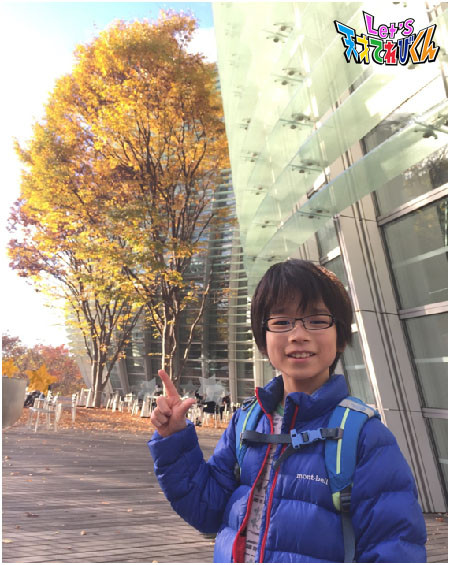
みなさんはどんな年こしをすごしたいですか。
では、来年もよろしくね♪
投稿者:辻晴仁 | 投稿時間:18時45分 | カテゴリ：てれび戦士 | 固定リンク
ゆく年くる年［桐畑カレン］
こんにちは。
カレンです (*^^*)
ご当地お鍋が食べられるという『 鍋フェス 』に行ってきました (^^)
冬になるとお鍋が食べたくなりますよね～。
おっ！さっそく、ぷりぷりおいしそうな鮎発見！！
炭火で焼かれた鮎の塩焼き、おいしくいただきました (^-^)
それから北海道のお鍋と福岡のお鍋を食べてみました。
もっと食べてみたいお鍋があったけど、おなかがポンポン (´Д｀)残念・・・
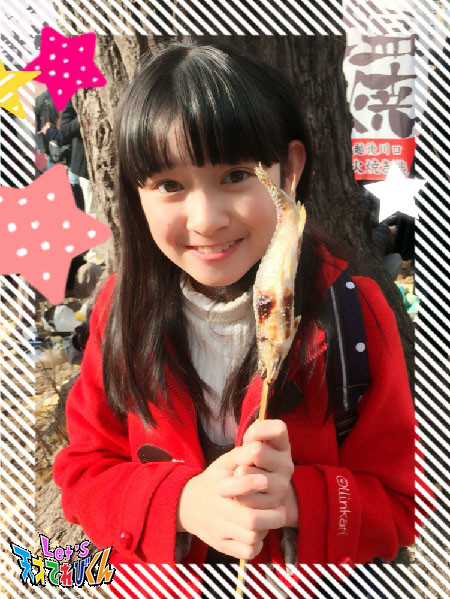
家で食べるお鍋もおいしいけど、
お外で寒いねーと言いながら食べるお鍋もおいしかったです (*^￢^*)
１年って本当にあっという間ですね～。
12月は楽しいイベントが次々とあって、もうピューと過ぎていくんだろうな。
今年もいろいろとあったのですが、
「 えっ。何！？ もしかしてどっきり！？ 」
と思ってしまった、とってもびっくりする出来事がありました (o^－^o)
それは何かというと・・・
体育の授業で「 アルティメット 」という競技をしたときに、
☆ MVP ☆
をもらったことです。
サッカーをすればオウンゴールの達人と言われ・・・
バレーボールをすればボールは前に飛ばないでうしろへ飛んでいき・・・
バスケットボールをすれば
ドリブルが気まぐれわんちゃんのお散歩をしてるみたいになる・・・
そんな私が体育でもらった初めての
☆ MVP ☆
もう、すっごくびっくりして、すっごくうれしかったです (*≧∀≦*)
うれしすぎて、家に帰ってお母さんに報告するまで大興奮でした！！
これが2016年カレンのビッグニュースです(^w^)
2016年残り少しと2017年も楽しく過ごせるように、
毎日笑顔でいたいなと思います♪
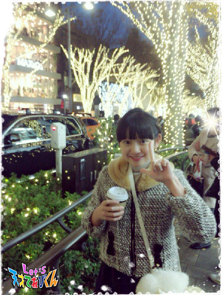
投稿者:桐畑カレン | 投稿時間:18時45分 | カテゴリ：てれび戦士 | 固定リンク
ゆく年くる年［柿澤仁誠］
こんにちは (＾o＾)/ にまです。
今年もさいごの月になりました！
ぼくはフィギュアスケートをテレビで見るのが好きで、
やってみたい！と思い、
この冬からスケート教室にかよっています！
最初は手すりからはなれることもできなくて、
フィギュアスケートのせんしゅは、
本当にすごいなと思いました。
今ではなんとかスイスイすべれるようになってきました。
うしろ向きとか、片足すべりとか
どんどんできるようになりたいです。
今年はスケート以外にも、
たくさんのことにチャレンジ！した１年でした。
来年も何があるか？ 今から楽しみです！
お正月に食べるおせち料理の意味を調べていたら、
ぼくは、伊達巻（ だてまき ）を多く食べたいなと思いました！
伊達巻の意味は、
べんきょうや習いごとの成功をいのる意味もあるらしいです！
伊達巻を食べて、来年もがんばります！
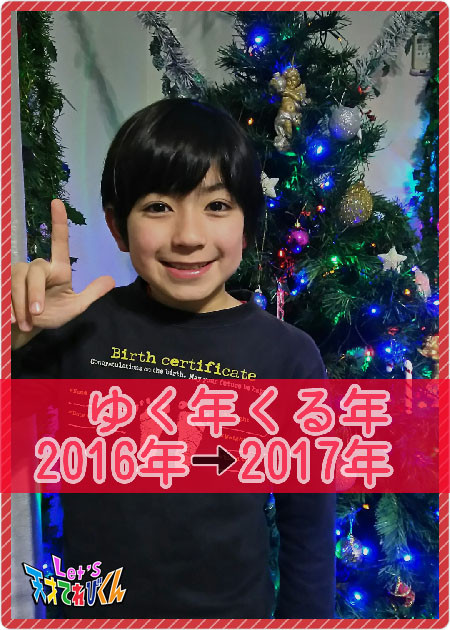
投稿者:柿澤仁誠 | 投稿時間:18時54分 | カテゴリ：てれび戦士 | 固定リンク
ゆく年くる年［小澤竜心］
こんにちは！竜心です。
2016年も残りわずかになりましたね。
今年もいろいろなことに挑戦させてもらい、
あっという間の１年でした。
10月には、日本舞踊の舞台に初挑戦して、
『 春興鏡獅子（ しゅんきょうかがみじし ）』の『 胡蝶（ こちょう ）の精 』を
踊らせていただきました。
ぼくにとって目標のお役でしたが、
稽古（ けいこ ）では難しい振りや姿勢があって、
いつも筋肉痛・・・。
本番の日は、すごく緊張していたのですが、
舞台に出たらすっごく楽しくなって、
リラックスして踊ることができました。
踊り終わったあとは達成感でいっぱいで、
もっと踊りたい！！
という気持ちになりました♪ヽ(´▽｀)/
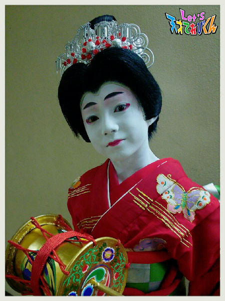
てれび戦士としては、少しお兄さんになり、
新しい仲間となかよく協力できて、
いつも楽しかったです o(^-^o)(o^-^)o
みなさんに、感謝の気持ちです。
ありがとうございました！
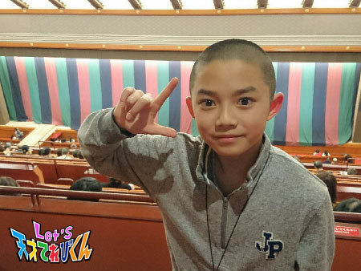
１年のしめくくりで、歌舞伎もみれてよかったです♪
早変わりの衣裳（ いしょう ）がはなやかで、
踊りがかわいらしくて、いやされました。
歌舞伎をみると、パワーがみなぎってきます。
新しい年もがんばろう～！！
2017年、ぼくは中学生になります。
勉強に部活動、新しい友達や先生、
どんな学校生活なのかな？
どんなことでも与えられたことに感謝して、
一所懸命にとりくんでいきたいです。
投稿者:小澤竜心 | 投稿時間:18時45分 | カテゴリ：てれび戦士 | 固定リンク
ゆく年くる年［稲垣芽生］
こんにちは
最近私はあったかグッズを
買ってもらいました。
手袋、ネックウォーマー、パジャマ。
裏地がフェルトのもの。
私が毛糸だとチクチクしてしまうので
フェルトのものを探して買ってきてくれたことも
あったかくてうれしいです。
では今回のテーマ【 ゆく年くる年 】です。
稲垣家は新年早々、
新しい年のカレンダーの12月のうしろのページに
その年の目標ややりたいことを書きます。
とても小さなことをたくさん、
例えば、お父さんは【 家族を旅行に連れていく 】とかいろいろ。
そして大晦日（ おおみそか ）の日に
目標をかなえることができたのか答え合わせ。
お父さんはほとんど達成。
さすが！！！
めいぼも今年はてれび戦士になる！！！という大きな夢がかなって
いろんな気持ちを経験して
またたくさんの目標ができました。
やりたいことも・・・
お話もうまくなりたい！
本をたくさん読んで、
新しい言葉も覚えたい！
来年のめいぼが成長するために！
内緒だけど目標は高くです！
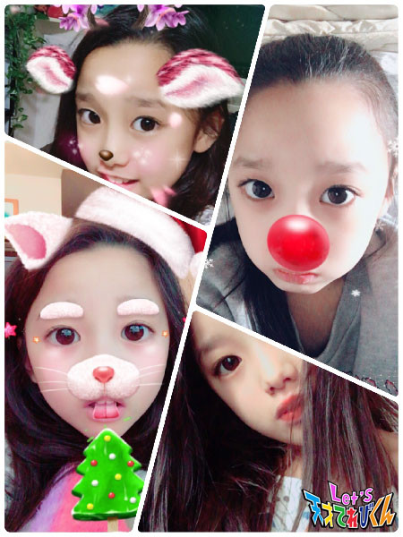
写真の加工に最近はまってます
違う顔になってしまうのがおもしろい
投稿者:稲垣芽生 | 投稿時間:18時45分 | カテゴリ：てれび戦士 | 固定リンク
ゆく年くる年［原田明莉］
こんにーーーちわ
原田明莉です！！
もーーー年末、最後の月だーーーーーーー
最後の月おもいっきり楽しもう！
ではでは本題に入ります
今回のテーマは
「 ゆく年くる年 」
です！
私の家は毎年大晦日（ おおみそか ）、
お母さんのお友達つながりのスリーファミリー（ ３家族 ）が
私の家で年を越すことが毎年毎年の区切りです！
家がめちゃめちゃ賑（ にぎ ）やかになったとき
今年も終わるんだなぁー
と思います！
それと、いつも一緒に過ごす仲の良いお友達が、
今まで私の方が身長大きかったのに
私の方が小さくなってる！！
とか
まだ私の方が大きいね！！
というときがあったり・・・
年越しそばを食べたり・・・
紅白歌合戦をみたり・・・
身長比べや年越しそばの食べる量などから
１年の成長を感じます
ほんっっっとに今年も充実した楽しい１年でした
今年は13年間の中で一番充実して楽しくすごせた１年だったので
来年は今年以上に充実させ、
がんばって楽しく今年を超えた１年にしたいと思います！
来年もがんばろう！！！
おもいっきり跳ぼう！！！
！！！Let's！！！
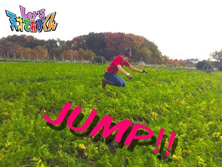
投稿者:原田明莉 | 投稿時間:18時45分 | カテゴリ：てれび戦士 | 固定リンク
ゆく年くる年［久保みのり］
こんにちは ( ´ ▽ ` )ノ
みのりです！！
もうすぐクリスマス♪
サンタさんにどんなプレゼントをお願いしようかなぁ～って
もう決めてあるけどひみつです。
おうちのツリーの下にお手紙を書いておいてあるんです^ ^
今年もいい子ににしてたからプレゼントは絶対にくるはず～
↑ 本当はちょっとドキドキです笑
このあいだ、小学校の仲良しのお友達と
少し早いけどクリスマス気分を味わってきました～♪
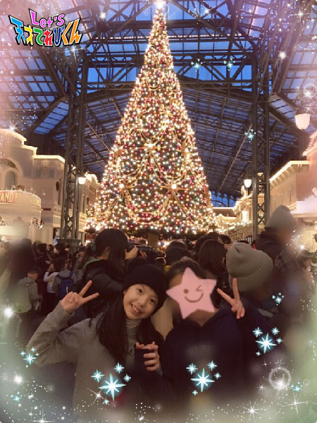
＊.｡.:*・ﾟ ＊.｡.:*・ﾟ ＊｡.:*・ﾟ ＊.｡.:*・ﾟ ＊.｡.
今回のテーマは『 ゆく年くる年 』
2016年ももうあとちょっとでおしまいですね。
今年、私が一番思い出に残っている出来事は、
やっぱりてれび戦士になれたこと！
家族やおじいちゃんおばあちゃん、学校の先生やお友達。
いろんな人に見てもらうことができました。
小学校でちがう学年のお友達にも話しかけられました。
登校中に、１年生のお友達が不思議そうに私を見てきたこともありました。
私がてれび戦士としてがんばることで、
だれかを楽しいきもちにさせてあげられていたらうれしいなぁ、と思いました^ ^
でも、私は小学生のがんばりも大切にしています。
４年生になって覚えなくちゃいけない漢字もふえたし、
算数も理科も社会もむずかしくなってきました (>_<)
宿題やテストの勉強が目の前にたくさんあると、
つい楽なほうへにげだしたくなるけど、
そんな弱い心ではかっこいいてれび戦士でいられないもんね。
来年の私は、てれび戦士も小学生も今までいじょうにがんばります！！
2017年も楽しいこと、いっぱーーーーーい
こいこい！！
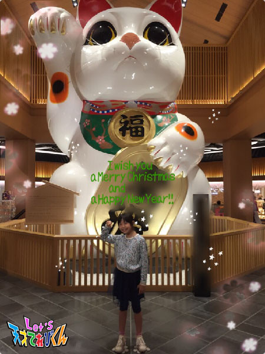
投稿者:久保みのり | 投稿時間:18時45分 | カテゴリ：てれび戦士 | 固定リンク
ゆく年くる年［飯島緋梨］
こんにちは
飯島緋梨です
すっかり寒くなりましたね～
街の中はライトアップされていて
イルミネーションがキレイな季節ですね (^^)
もうすぐクリスマス！
ケーキにプレゼント楽しみです (^o^)
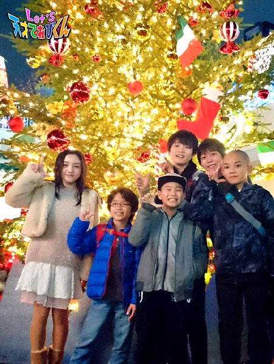
さてさて今回のお題は
『 ゆく年くる年 』
今年は中学校に入学して
今までとはだいぶ生活も変わりました
学校に行くのも自転車通学だし
初めての制服
初めての試験
初めての部活
初めてづくしで
いろいろと慣れるまで大変でした
でもあっという間に12月！
今年も終わりですね (^^)
年明け早々スキー教室もあるし
来年はもっともっと新しいことにチャレンジしたいな(^^)
Let's チャレンジ！
投稿者:飯島緋梨 | 投稿時間:18時54分 | カテゴリ：てれび戦士 | 固定リンク
ゆく年くる年［皆川寧々］
みっなさ～ん、
こんばんは、＊寧々＊です (｡・u・｡)/☆
この前、はじめて
プロバスケットボール選手が活躍する“ Bリーグ ”を見に行きました。
ジャンプの高さや、シュートの正確さに
口が開いたままになってしまいましたヾ(･口･)ﾉ
なんといってもダンクシュート！！
空中に３秒間くらいは浮いていましたね！
時が止まったかのようで、ホントに
カッコ良かったです ☆☆☆
ダンクシュートは無理ですが、
ゴール下のシュートやディフェンスを
特訓するぞ～！と、とてもやる気になりました！
今日のテーマは、
『 ゆく年くる年 』。。。
12月に入ってからは、ホントにかけ足のように
毎日がすぎていく気がします！
走るって漢字が入ってるだけありますよねぇ。
ホントに『 師走（ しわす ）』ですよ！
来年の４月にはついに
中学生です (*°u°*)yeah！
新しい学校、かわいい制服、部活に、友達、勉強に etc。。。
ワクワクしてしまいます m・u・m
小学校生活も残りわずか、
過ぎてみれば長いようで短い
６年間でした。。。
いま所属しているバスケチームで
プレーできるのも残り３カ月です (ﾉд-｡).°○
寒くなってきたので、
毎回の練習がつらいですが、
これから大会もたくさんあるので、
後悔のないようにバスケも全力で最後まで
がんばりたいです *:･(*-ω人)･:*
最後は奈良編で行った平城宮跡で
桃ちゃんとパチリ！
奈良どちゃもん・きんしゃかもいましたが、
たくさんの鹿に囲まれて楽しかったです。
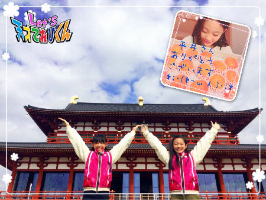
くずもちスイーツでお世話になった
平井農園の平井さん、
丁寧に育てたおいしい柿をわけていただき
ありがとうございます！
初めての柿狩りはオレンジ色にも微妙な違いがあって
収穫時期を迎えたオレンジ７～８を探すの楽しかったです！
それでは＊寧々＊でした～
投稿者:皆川寧々 | 投稿時間:18時45分 | カテゴリ：てれび戦士 | 固定リンク
雪の思い出［柿澤仁誠］
こんにちは！
にまです (^o^)／~~
冬は寒くて、朝、おきようとすると
お布団があたたかくて、
なかなかおきることができません f(^^;
そうすると、お母さんが
「 雪がふっているよ！ 」と、
朝におこしてくれる日があるんです。
雪＼(^o^)／と聞いただけで、
目がバッチリさめます！！
やったー ★ と、カーテンを開けてまどの外を見ると、
白くなっててメチャメチャうれしい！！
雪の力で、おきるのがラクになります (^-^)
たまに雪だよ！とおこされても、
雪がない！だまされたーーってときもあります (TДT)
この冬は何回雪がふるか今から楽しみです！
↓ ブログの写真がないなと困っていたら、
みんなが協力してくれました (^^)
やさしい仲間です！
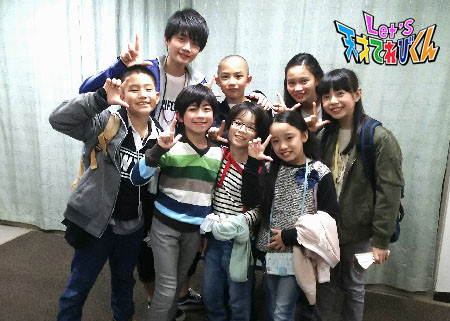
投稿者:柿澤仁誠 | 投稿時間:18時45分 | カテゴリ：てれび戦士 | 固定リンク
雪の思い出［桐畑カレン］
こんにちは。
カレンです (*^^*)
先日ふらりとお出かけしたところの道路が
真っ白なキャンバスになっていました。
その長さ、なんと700メートル（ 気になったから聞いてみました )！！
たくさんの人がお絵かきをしていたので、私も描いてみました (^^)
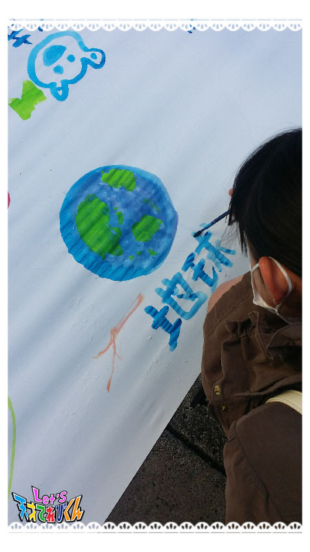題名「 地 球 」 カレン画
もうすぐ、大阪に異次元獣がやってきます。
おくとぱすみれを助けるため、地球の未来を守るために、
みなさん一緒にがんばりましょう L(‘▽‘)／
よろしくお願いします！！
☆★☆★☆★☆★☆★☆★☆
私の住んでいるところは、あまり雪が降りません。
パラパラと降ることがあっても、
雪が積もるのは年に１回か２回くらいなんです。
だから、雪が降ったらすっごくテンション上がります。
いつもは「 寒い寒い 」言ってるのに、不思議 (^o^;)
雪が降ったときに、必ずすることがあります。
それは「 雪の結晶 」の観察！
冷凍庫の中でクリアファイルを冷やして、ひえひえに冷えたら出します。
そこに黒い紙をささっとはさんで、
降ってくる雪をファイルの上にのせてあげるんです。
そうしたら、雪の結晶がみえるんですよ。
雪の結晶の形は、とてもきれいで大好きです。
ずーっと見ていたいのに、すぐに消えてしまうのが悲しい (T^T)
結晶つながりですごく見てみたいのがあるんですが・・・
それは
☆ダイヤモンドダスト☆
空気中の水蒸気が冷やされて氷の結晶になって、空から降ってくるそうです。
それが、太陽に照らされてダイヤモンドみたいにきらきら輝くみたいです。
降ってるあいだ、ずーっと見れるのかあ。
しかもダイヤモンドみたいに輝いてるなんて！！
見てみたーい (*≧∀≦*)
雪が大量にあったら、かまくらを作って、
その中で大好きなおもちを焼いて食べてみたいな
投稿者:桐畑カレン | 投稿時間:18時45分 | カテゴリ：てれび戦士 | 固定リンク
雪の思い出［胡内奏芽］
こんにちは！
胡内です。
最近、朝に自分でおにぎりを作ることにはまっています。
そのときに、どーしても手に塩がついてしまって、、
とっさに、なめてしまうんですが、バレたらお母さんに怒られそう笑。
気をつけます！！
で、いつもお母さんが作ってくれる『 きんぴら 』作りに挑戦しました。
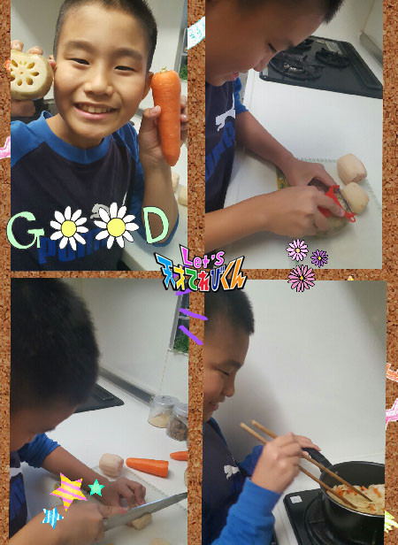
れんこん大好きだけど、切るのがこんなに大変だなんて思わなかった。
できあがり (*^^*)
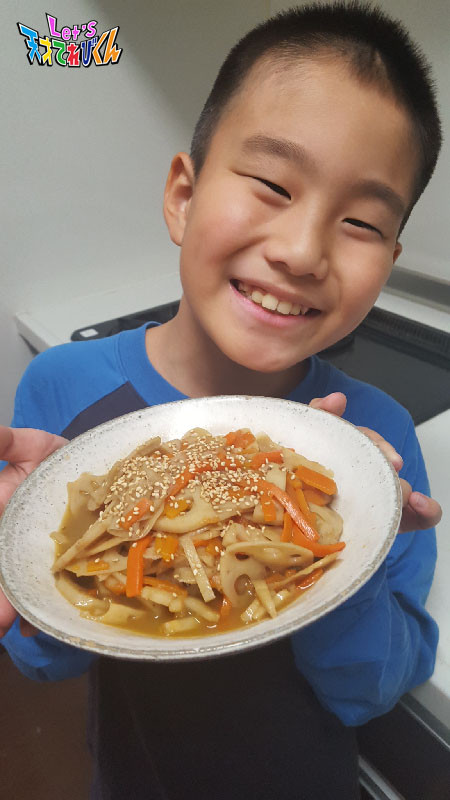
おいしくできましたよー！！
さて、今回のテーマは
「 雪の思い出 」です。
２年前かな？
たくさん雪が降った日がありました。
そのときに、雪だるまを作ったのが楽しかった思い出。
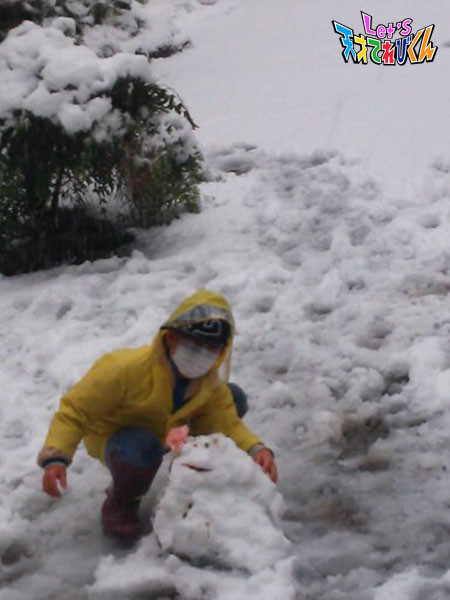
雪が降ると必ず雪だるまを作るんだけど、
このときの雪だるまがなんだか好きなんです。
今まで作った雪だるまのなかで、一番マルマルしてるからかなー？
この冬も雪だるま作りたいなー！！
投稿者:胡内奏芽 | 投稿時間:18時45分 | カテゴリ：てれび戦士 | 固定リンク
雪の思い出［原田明莉］
こんにっちわ
原田の方の明莉です！
いやーーもーー
最近寒すぎるよーー！！
私は夏が好きなので、これからの時期
冬の寒さに耐えることをがんばります！！！
ではでは
今回のお題は
「 雪の思い出 」
です！！！
私の雪の思い出は２つ！
まず１つめ！
ひぃおばあちゃんが鹿児島に住んでいて
６年前に行ったとき、大雪になって。
自然が豊富で人が少なくて、車も通らなくて、
田んぼばかりで、すんごいきれいなのどかな場所なんです
そこで130センチくらいの雪だるまを作ったり
きれいな雪をとってシロップをかけて
かき氷みたいにして食べました！！
もーほんとに自然そのものの中にいる感じで、楽しすぎました！
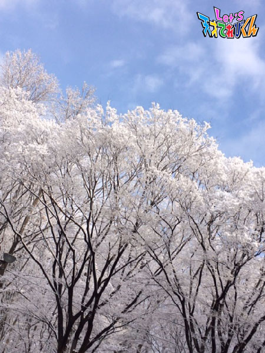
２つめー！
去年大雪になったとき
友達と巨大すべり台を作ったことです！！！
作るのは疲れたんですが
できてすべりはじめたときは、ものすんごい楽しかったです！！！
45リットルサイズのゴミ袋をお尻の下にしいてすべりました！
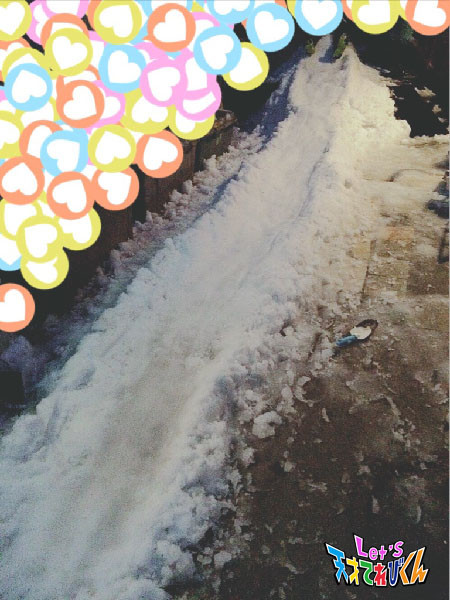
私の雪の思い出はこんな感じです！
最高な思い出です
それでは
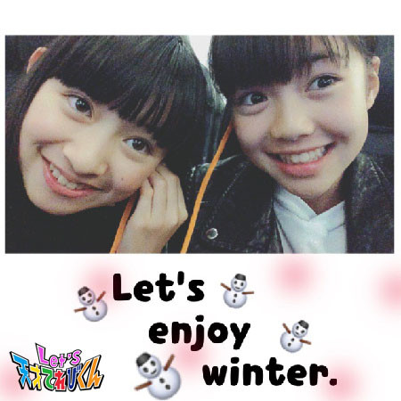
桐畑カレンちゃんと
これからの
冬を楽しみましょうねー！
みなさんの雪の思い出はなんですかー？
投稿者:原田明莉 | 投稿時間:18時54分 | カテゴリ：てれび戦士 | 固定リンク
雪の思い出［稲垣芽生］
こーんにーちはー
最近寒いです。
雨も降ってしまうと
さらに寒いです。
でも、雨が雪に変わると
なんだか心があったかくなります。
今回のテーマの
【 雪の思い出 】
雪は大好きです。
雪だるまに、投げ合いっこ、楽しいです。
一番覚えているのは、
４年前にたくさんの雪が降った日の学校での思い出。
２時間めが終わり、鐘が鳴り響くと同時に
雪が降っているのでみんなも私もウキウキで校庭に行き
友達と雪だるまではなくてウサギを作ることにしました。
耳は葉っぱ、目は実、口は枝・・・
楽しくってすごく上手にかわいくできあがりました。
雪で作るウサギは白くってかわいらしくて
ずっとそのままとっておきたかったなぁ。
そうしたら数日後、校長室の近くに
ちいさいけれど私たちの作った雪ウサギの
写真が貼ってあって、とてもうれしかったです。
がんばって作った雪ウサギ
写真に撮ってもらえて少し笑っているように見えました。
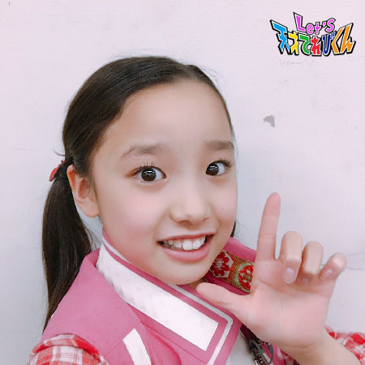
自撮りがとっても難しい・・・ (^^♪
Let's！！！！！
投稿者:稲垣芽生 | 投稿時間:18時45分 | カテゴリ：てれび戦士 | 固定リンク
雪の思い出［林武尊］
こんにちは、林武尊です。
「 NHK文化祭 」で、ツージーとサッサーに再会（≧∇≦）
久しぶりに会えて、うれしかった！
カレンも一緒に記念撮影しました～
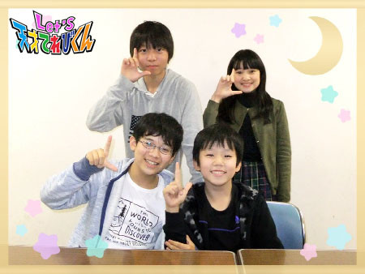
今回は『 雪の思い出 』というお題です。
僕は東京に住んでいますが
けっこう雪と触れ合うことが多いです。
岡山県に帰ったときにはスキーをしたり、ソリに乗ってすべったり。
いとこと雪合戦をしたり、おばあちゃんと雪かきもします。
毎年行くスキー場では、すべる場所が大きく分けて２つあり、
毎回、僕は簡単な方をやっていて、難しい方はやらないつもりでした。
けど何回もやっていくにつれて段々と慣れていって、難しい方も挑戦するようになりました。
今度はスノボをやりたいと思います！
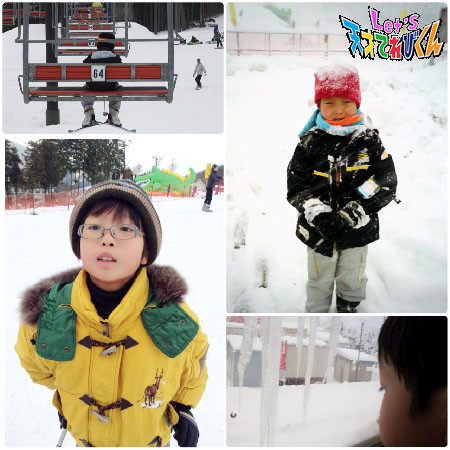
東京にいるときにもたくさん降ったことがあって、
うれしくて雪だるまを作りました(^O^)／
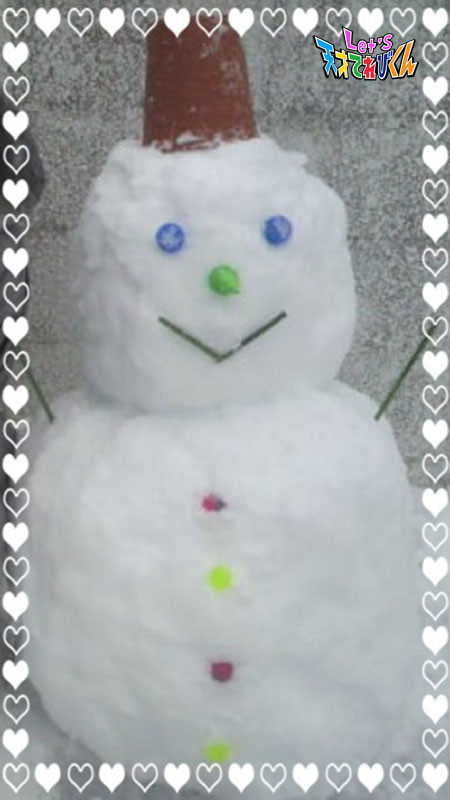
でも寒いのはちょっと苦手・・・
家に帰ってすぐにストーブをつけて毛布にくるまります (^◇^;)
でも、朝起きて雪が積もってたら、ワクワクしますよね～
この冬もたくさん降るかなー？
投稿者:林武尊 | 投稿時間:18時45分 | カテゴリ：てれび戦士 | 固定リンク
雪の思い出［久保みのり］
こんにちは ( ´ ▽ ` )ノ
みのりです！！
みなさん、寒くなってきたけど、かぜをひいていませんか～？
私は、たくさん食べて早寝早起きして元気にしているよ。
だって、いじげんじゅうにされてしまったおくとぱすみれちゃんを
助けなくちゃいけないからねっ。
パワーを満タンにしておくよ☆
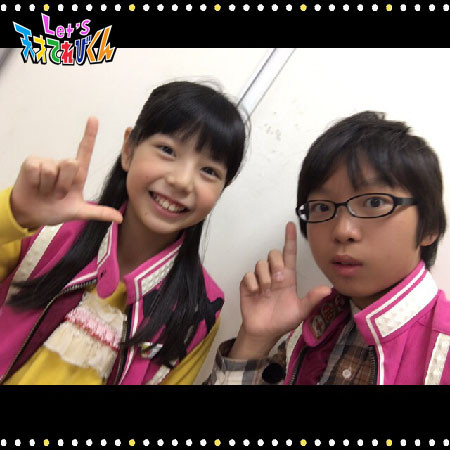
＊.｡.:*・ﾟ ＊.｡.:*・ﾟ ＊.｡.:*・ﾟ ＊.｡.:*・ﾟ ＊.｡.:
今回のテーマは『 雪の思い出 』
私のお父さんはスノーボードが大好きなので、
私がお母さんのおなかにいるときから
雪山に行ってたんだよ、って教えてもらいました ^ ^
今も冬になると毎年、岐阜県や長野県へ
スキーに連れて行ってもらっています。
どんどん急な坂でもすべれるようになってきたから
とっても楽しいです！！
それから、スキー場で食べるラーメンは最高においしいです^ ^
スノーボードにもちょうせんしてみたいなぁ～。
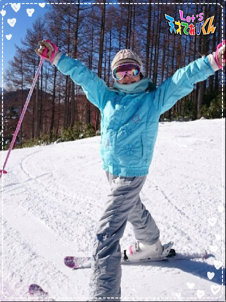
私の住んでいる名古屋市では
毎年１回は、雪が10センチくらいつもります。
雪のつもった日は、長ぐつをはいて少しはやく家を出て、
だれも通っていないところを、
さくっさくって足あとをつけながら学校へ行きます ^ ^
気持ちがいいんだよね～！！
でも、あんまりフラフラしてると、
まっすぐ歩きなさい、っていっしょに登校してるお姉ちゃんにしかられるけど (*･ω･)
それから、学校に着いたらダッシュで運動場にでて遊びます♪
もちろん、だれもさわっていないきれいな雪の取り合いです笑
寒い冬の朝は、おふとんから出られないし好きじゃないけど、
雪がつもっている日の朝は、
寒いはずなのになんだかうれしくてすぐに起きられます！
この冬も雪がつもるといいな～ (^O^)
投稿者:久保みのり | 投稿時間:18時45分 | カテゴリ：てれび戦士 | 固定リンク
雪の思い出［小澤竜心］
こんにちは！竜心です。
11月は「NHK文化祭 2016」がありました！
特別ミッションでは、
みなさんと一緒に、クイズをしたりダンスをしたり、
とても楽しくてうれしかったです (≡^∇^≡)
ありがとうございました！！
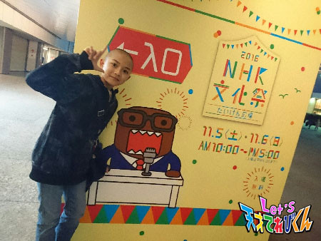
ぼくの『 雪の思い出 』は、
秋田のおじいちゃんが作ってくれた、
『 かまくら 』です♪
おじいちゃんはいつも、
雪の遊び方を教えてくれます！
だから、冬に秋田に行くのが楽しみです。
かまくら作りの始めは、ぼくも一緒に作るんですが、
いつも途中であきてしまいます・・・(´▽｀；)ゞ
ほかの遊びに夢中になっているうちに、
なんと、かまくらが完成していました。
おじいちゃんが１人で作ってくれたんです！！
家族で入れるほど大きくて、
なかには祭だんや座るところもあって、
とても立派なかまくらでした。
近所の人も見にきてくれて、うれしくなりました♪
ぼくは、最後まで作ってませんけどね・・・。
それでは、ごらんください。
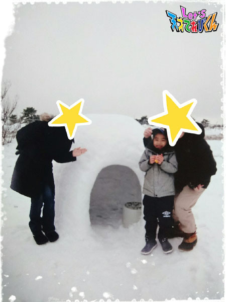
おじいちゃん、ありがとう～！
また、遊びに行くね～ ((o(^∇^)o))
投稿者:小澤竜心 | 投稿時間:18時45分 | カテゴリ：てれび戦士 | 固定リンク
雪の思い出［皆川寧々］
みっなさ～ん、
こんばんは、＊寧々＊です (｡・u・｡)/☆
先日、妹の七五三で明治神宮に参拝にいきました。
日曜日の大安は、ポカポカ陽気で、
七五三に、白無垢（ しろむく ）の花嫁さんに
海外の観光客の方々に、
明治神宮は参拝日和でした。
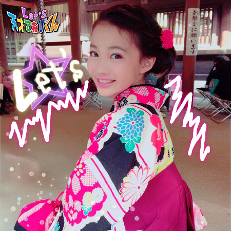
妹に便乗して、わたしも袴（ はかま ）を着せてもらいました☆
来年の３月の卒業式でも着たくなりました。
さて今回のお題は「 雪の思い出 」です！
私のかよっていた保育園では、
年中さんと年長さんのときに
長野県へ泊まりがけで雪遊びに行く！という
すてきなイベントがありました。
年中さんは雪遊びがメインで、
本気の雪合戦をしたり雪だるまを作ったり、
普段東京では味わえない『 雪 』を思う存分楽しみました。
年長さんは雪遊び＋スキーに挑戦でした。
初めてのスキーは、
カニさん歩きでゲレンデを登りスキー板に慣れるところからはじまります。
雪の上をたくさん歩くのになれていないので、
思うように進めなかったり足がズボッてうまったり大変でしたが、
おもしろかったです。
初めてのスキーをすべった感想は、、、
実は一生懸命なのと緊張もあって
正直あまり覚えていません p(o_o;))”
ただ、一番印象に残っているのは
リフトが怖かった！！と、いうことです。
めちゃくちゃ揺れるし、雪も降ってきて寒くなるし、
落ちたらどうしようとか、
リフトからうまく降りれるかなぁとドキドキでした。
小学生になってから
ウインタースポーツを全然やっていないので、
今年の冬は、スノーボードに挑戦してみたいなぁと
ひそかに思っています♪( ´▽｀)
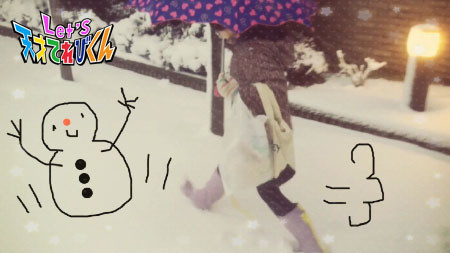
それでは＊寧々＊でした♪
投稿者:皆川寧々 | 投稿時間:18時54分 | カテゴリ：てれび戦士 | 固定リンク
ページの一番上へ▲